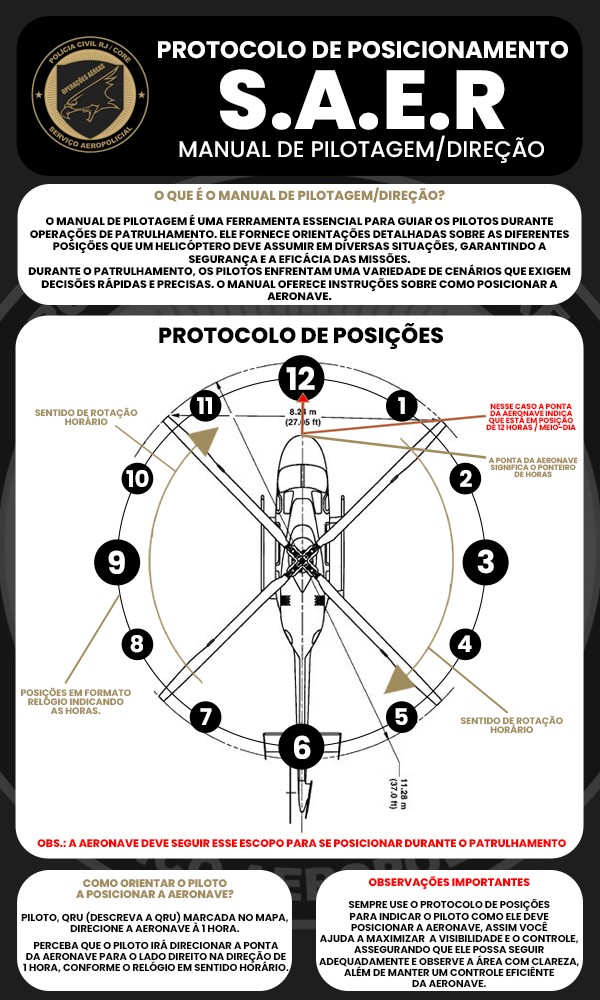

UTILIDADES
Central de recursos, normas e aprendizado do SAER
PERCURSO DE VOO
Aprenda o percurso completo de voo do SAER
Assista ao tutorial completo do percurso de voo e aprenda as melhores práticas para pilotar com segurança e eficiência.
DICAS PARA PILOTOS INICIANTES
- Pratique o percurso em altura elevada primeiro
- Mantenha sempre contato com a torre de controle
- Verifique o checklist antes de cada decolagem
- Treine pousos de emergência regularmente
AVISOS IMPORTANTES
- Nunca desligue o motor em pleno voo
- Respeite o teto máximo de cada aeronave
- Mantenha distância segura de outras aeronaves
- Em caso de pane, comunique imediatamente
CONFIGURAÇÕES RECOMENDADAS
Para Pilotos de Helicóptero
A fim de garantir maior controle, precisão e segurança nas operações aéreas, estas são as melhores configurações de teclas para os pilotos utilizarem em suas aeronaves:
Essas configurações permitem um voo mais ágil e responsivo, usando mouse + teclado.
Protocolo de Posicionamento S.A.E.R
Manual de Pilotagem e Direção
O Manual de Pilotagem e Direção é fundamental para todos os pilotos de helicóptero em operações de patrulhamento, garantindo eficiência e precisão em cada ação realizada.
Importância do Protocolo
Segurança
Define diretrizes claras de posicionamento da aeronave em diferentes cenários, protegendo pilotos, tripulação e demais envolvidos.
Eficiência
Permite manobras mais ágeis e seguras, reduzindo riscos e aumentando a eficácia das operações.
Decisão Rápida
Em situações dinâmicas, o protocolo orienta o piloto a agir com rapidez e assertividade.
Orientação Visual
O uso de esquemas e ilustrações facilita o aprendizado e a correta execução durante treinamentos.
Treinamento
Serve como base sólida para novos pilotos, padronizando práticas recomendadas.
Esquema de Posicionamento
PROTOCOLO
DE
POSICIONAMENTO
S.A.E.R
- Sempre use o formato de relógio (12h, 3h, 6h, 9h...) para indicar a posição da aeronave.
- O piloto deve apontar a ponta do helicóptero para a hora indicada, seguindo o sentido horário.
- Isso garante visibilidade máxima, controle seguro e patrulhamento eficiente.
A AERONAVE DEVE SEMPRE SEGUIR ESSE PADRÃO DURANTE AS OPERAÇÕES.
Manual de Pilotagem

Conclusão
O Protocolo de Posicionamento S.A.E.R é um instrumento essencial para a aviação tática, garantindo operações mais seguras, organizadas e eficazes. Segui-lo é preservar vidas e assegurar o sucesso das missões.
PILOTO SAER
Descrição
O piloto do SAER é responsável por prestar o apoio aéreo, visual aéreo em perseguições e ganhar experiência no grupamento.
REQUISITOS
- Saber pilotar helicóptero
- Fazer o concurso
- Ter boa modulação e comunicação
RESPONSABILIDADES
- Pilotar helicópteros
- Ajudar os atiradores a cumprir a meta
- Treinar e se dedicar ao grupamento
EQUIPAMENTOS
- Armamento de acordo com a patente
- Rádio
- Rapel
ESPECIALIZAÇÕES
- Pilotar helicoptero
- Resgate em favelas
- Operações de alto risco
ATIRADOR SAER
Descrição
O Atirador SAER é o especialista em tiro embarcado, responsável pela cobertura aérea e engajamento de alvos durante operações policiais e situações de alto risco.
REQUISITOS
- Ter noção de tiro
- Fazer o concurso
- Ter boa modulação e comunicação
RESPONSABILIDADES
- Ajudar manter a cidade em segurança
- Fazer protocolos de voo
- Prestar QRR em QRU
ARMAMENTOS
- Armamento de acordo com a patente
- Rádio
- Rapel
ESPECIALIZAÇÕES
- Atirar de longas distâncias com precisão
- Modulação em protocolo de voo
- Comunicação em horas
ELITE SAER
Descrição
A Elite SAER é composta pelos operadores mais experientes e capacitados, selecionados para as missões de maior complexidade e risco.
REQUISITOS
- Todas as certificações SAER
- Ser ativo no grupamento
- Avaliação de desempenho superior
RESPONSABILIDADES
- Ajudar os pilotos e atiradores
- Treinamento de novos operadores
- Prestar QRRs de alto risco
CAPACITAÇÕES
- Operações especiais avançadas
- Pilotar helicopteros de forma avançada
- Realizar protocolos de voo sozinho
DIFERENCIAIS
- Cargo de Elite no grupamento
- Prioridade em pacificação e incursão
- Reconhecimento na matriz
ADMINISTRADOR SAER
Descrição
O Administrador SAER gerencia toda a estrutura administrativa, logística e operacional da unidade, garantindo que todos os recursos estejam disponíveis.
REQUISITOS
- Ser ativo no grupamento
- Ajudar nos concursos SAER
- Ser piloto e atirador de elite
RESPONSABILIDADES
- Monitorar os membros
- Fazer o controle de metas
- Administrar o bate ponto
ÁREAS
- Bate-ponto
- Organização de fardamentos
- Treinamentos e concursos
ESPECIALIZAÇÕES
- Conhecimento sobre o SAER
- Planilhas administrativas
- Auxílio em treinamentos
COMANDO SAER
Descrição
O Comando SAER é responsável pela liderança estratégica da unidade, tomando decisões críticas e coordenando todas as operações aéreas da Polícia Civil do RJ.
REQUISITOS
- Ser indicado e nomeado por algum Delegado
- Experiência em aviação policial
- Liderança comprovada
RESPONSABILIDADES
- Comando geral da unidade
- Autoriza treinamentos e concursos
- Solicita a licitação do SAER
ESTRUTURA
- Comandante
- Subcomandante
- Administrador
ESPECIALIZAÇÕES
- Pilotar e atirar em operações de alto risco
- Treinamentos de operações especiais
- Representação institucional